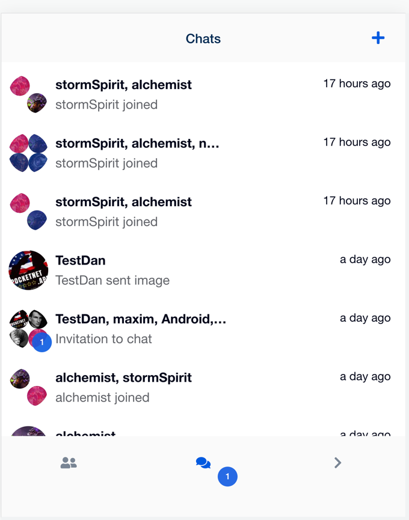
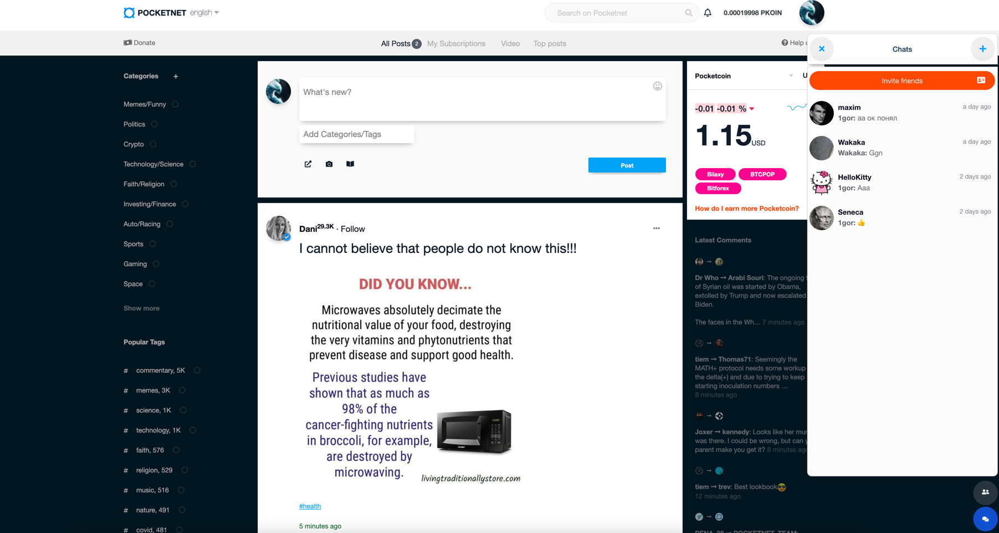
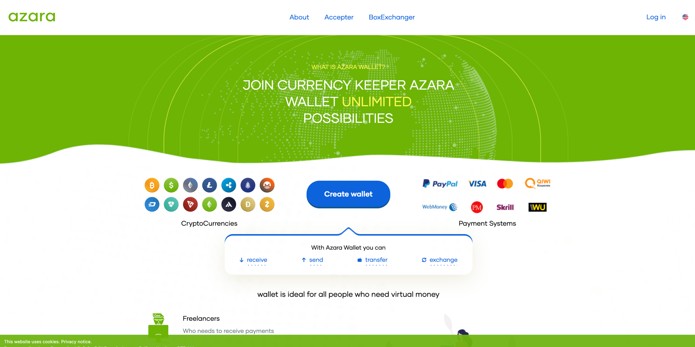
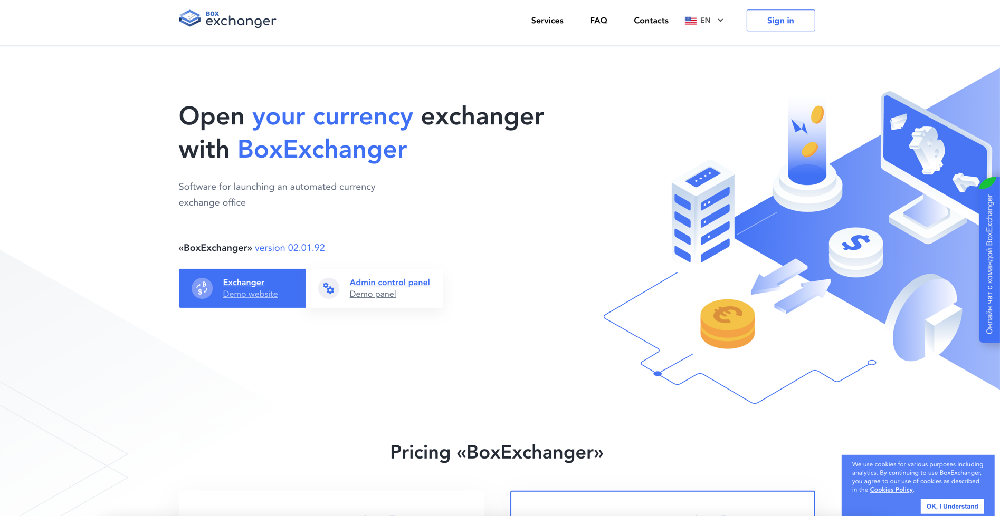
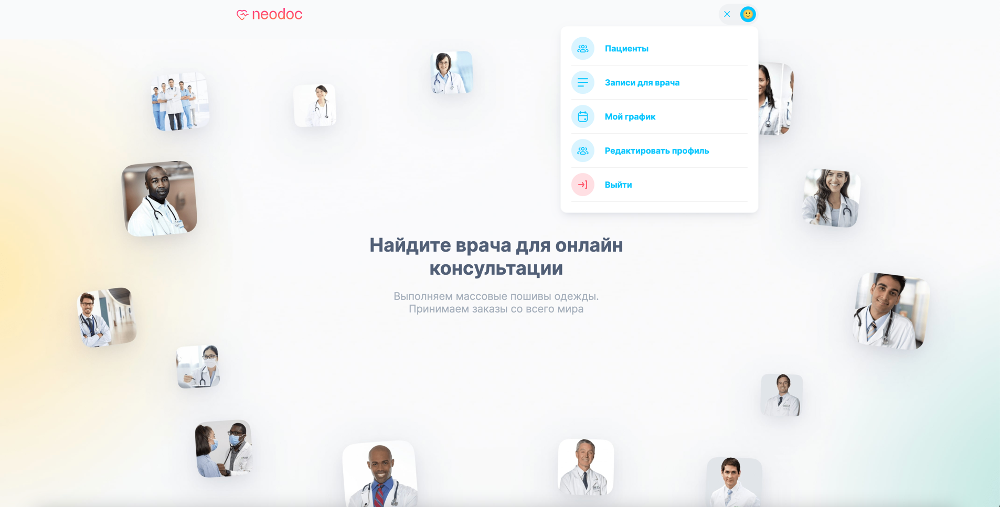
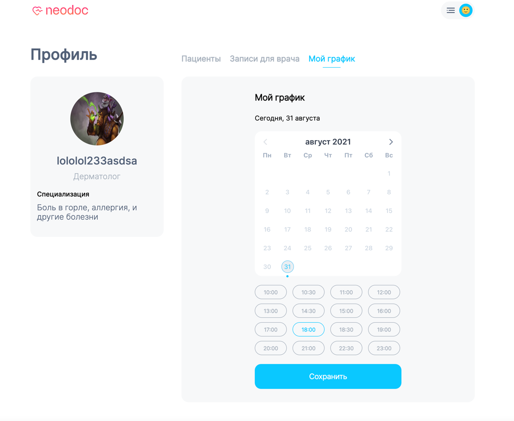
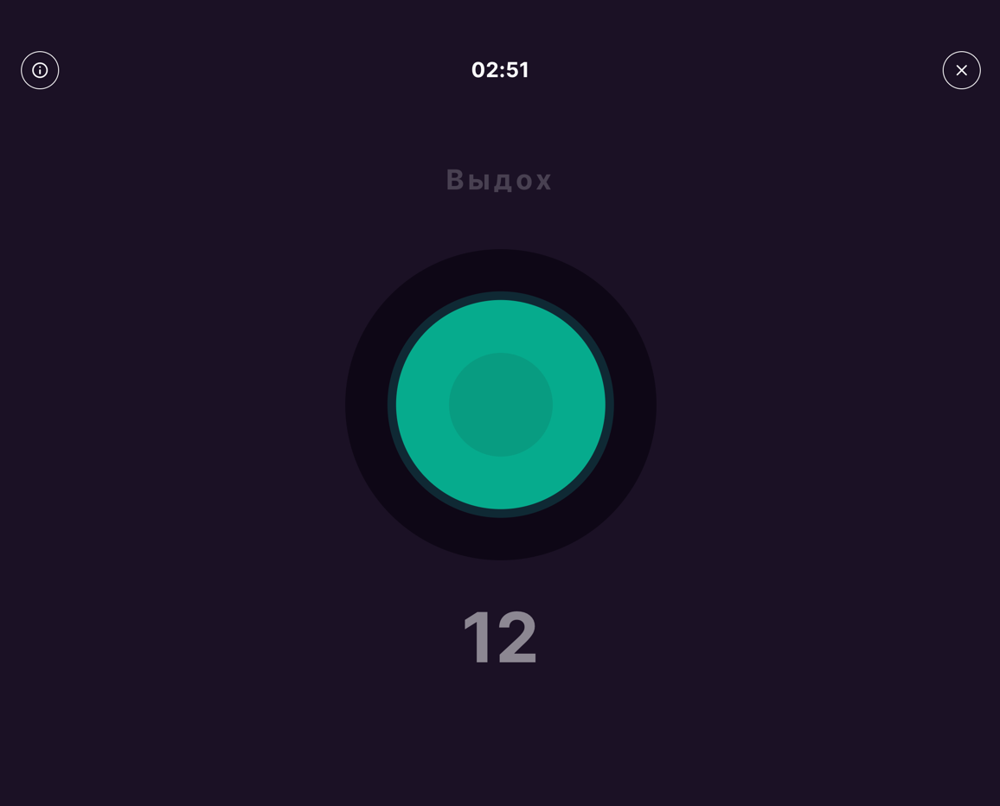

Igor Kim
Senior Frontend Engineer · React / TypeScript
About
Senior frontend engineer with 7+ years building real-time, performance-critical interfaces: chat at scale (Matrix SDK, virtualized lists for 10k+ messages), crypto-exchange UIs, fintech dashboards, Electron desktop apps. React / TypeScript today; deep history in Vue/Nuxt.
I care about the parts users feel — input latency, perceived speed, the way state moves between screens. I don't ship "looks finished but breaks under real data" UIs. Code I leave behind is small, typed, tested where it matters, and easy for the next person to read.
Currently exploring AI-driven personal tooling — built a daily morning briefing PWA on React 18 / Vite / FastAPI that pulls jobs and news through Claude-powered scoring pipelines, with a pluggable apps architecture (manifest-declared surfaces, MCP-callable tools, hot mount/unmount). Useful as a portfolio of how I think about systems beyond a single screen.
What I do best
- Real-time chat & messaging. Matrix SDK, WebSockets, custom virtualization for thread lists with thousands of messages, encryption pipelines, image/file attachments with preview, typing indicators.
- Crypto / FinTech UIs. Exchange forms, order histories, partner pages with auth flows, wallet interactions, USDT/crypto payment integrations.
- Performance work. Profiling React renders, bundle splitting, virtualized lists, intersection-observer-driven lazy loading, network-aware caching strategies.
- State at scale. Redux Toolkit, MobX-State-Tree, Zustand. Picking the right tool for the shape of the data, not the framework du jour.
- Cross-platform clients. Electron desktop apps with multi-window flows, IPC, native menus.
Alandarev — Redux External
- Senior Frontend Engineer
- Mar 2022 — Aug 2023 (1 year, 5 months)
- Remote
- React, Redux Toolkit, Jest, MongoDB, Electron, virtualized lists
Selected work
- Owned the chat module of a Zoom-class corporate communications client. Designed it for the cases real chat hits: long histories, attachments, simultaneous threads.
- Built the chat with virtualized message lists — opens instantly even on multi-thousand-message threads, scrolls without jank on slow machines.
- Detached chat windows via Electron IPC: open any thread in a separate window, drag across monitors, keep state in sync.
- Attachment pipeline: upload with progress, paste-from-clipboard, image preview, file download, retry on flaky network.
- Read-receipt logic via Intersection Observer — messages mark as read only when actually visible, batched to avoid network thrash.
- Context menus on attachments and messages, custom keyboard shortcuts, polished hover states.
Pocketnet
- Senior Frontend Engineer (chat lead)
- Sep 2020 — Nov 2021 (1 year, 3 months)
- Remote
- VueJS, Matrix JS SDK, Synapse, E2E encryption, Docker
Selected work
- Built the entire chat product on top of Matrix protocol — solo for the first six months, then leading a two-engineer team. Used roughly 60% of the Matrix JS SDK surface; the rest of the integration is reusable across any future project.
- Direct & group chats, contact management with search, user invites, group admin (members, files, images, group rename).
- Message types: text, images with inline preview, files with download, URL link previews, image gallery view.
- End-to-end encryption flows wired via Matrix's crypto APIs.
- Mobile-responsive — same codebase serves desktop, tablet, mobile with adapted interaction patterns.
- Live product


AZARA
- Senior Frontend Engineer
- Jul 2020 — Apr 2021 (9 months)
- Amsterdam · Remote
- VueJS, NuxtJS, SCSS, WebSockets
Selected work
- Crypto exchange front-end: order forms, order history with filters, exchange-history accordions with rich data, real-time order book via WebSocket connections.
- Owned the client side end-to-end — landing, demo, transactional flows.

BoxExchanger
- Senior Frontend Engineer
- Mar 2019 — Aug 2020 (1 year, 5 months)
- Amsterdam · Remote
- VueJS, NuxtJS, SCSS
Selected work
- Owned the entire client side: marketing site, trading demo, admin panel.
- Crypto-exchange forms with multi-step validation, auth & registration flows, partners directory, search & filter UIs.
- Translated complex finance flows (rate calculations, fee disclosure, KYC steps) into UIs that don't lose users mid-transaction.

OptDyn / Subutai
- Frontend Engineer
- Jun 2018 — Jul 2019 (1 year, 1 month)
- New Castle, Delaware · Remote
- Angular 1.5, jQuery, DataTables, Three.js
Selected work
- Built and shipped the Subutai.io marketing site.
- Implemented core product flows for Bazaar — refactored legacy code, removed unused libs, modernised dependencies.
- Browser extension that generated PGP keys for the user's wallet after auth.
- Container backup & snapshot UIs (think docker-style snapshots, rendered client-side from raw API data).
- Heavy data-table work — sortable, filterable, resizable, with custom cell renderers.
- 3D globe visualisation via Three.js for the network topology view.
- First "real company" job — learned how cross-functional product teams work (PMs / backend / QA / design).
NEO DOC
- Frontend Engineer (Tech Lead, MVP)
- Jul 2021 — Oct 2021 (4 months)
- Bishkek, Kyrgyzstan
- Live MVP
Selected work
- Took the MVP from spec to release as the sole frontend.
- Calendar/booking UI: date picker, slot availability, validations.
- Order forms with conditional flows and server-side validation feedback.


NBFIT
- Frontend Engineer
- May 2021 — Jul 2021 (3 months)
- Bishkek, Kyrgyzstan
Selected work
- Built the breathing-exercise interactive module — animation timing tuned for actual breath cycles, not stock easing curves.

Stack
- Languages: TypeScript (daily), JavaScript (ES6+), HTML5, CSS3.
- Frameworks: React 18 (incl. concurrent, Suspense, hooks-deep), Vue 2/3, Nuxt, Next.js.
- State: Redux Toolkit, MobX-State-Tree, Zustand, Vuex; React Query / TanStack Query.
- Real-time: WebSockets, Matrix JS SDK + Synapse, intersection-observer flows, virtualized lists (react-window, react-virtualized).
- Desktop: Electron — multi-window IPC, file system integration, native menus, system tray.
- Styling: SCSS / Less, styled-components, emotion, Tailwind, Framer Motion.
- Testing: Jest, React Testing Library, Playwright (e2e smoke).
- Build/infra: Vite, Webpack, Babel, Docker Compose, GitHub Actions.
- Networking & data: REST, GraphQL (consumer), Axios/Fetch, REST cache strategies.
- Adjacent: Node.js for full-stack work, FastAPI for personal tooling, basic blockchain & E2E encryption.
- Tools: Figma, Adobe XD, Zeplin; Jira / GitHub / GitLab / YouTrack; agile & scrum at varied team sizes.
- Languages (human): Russian (native, interview-ready), English (technical reading & writing fluent, conversational ok).